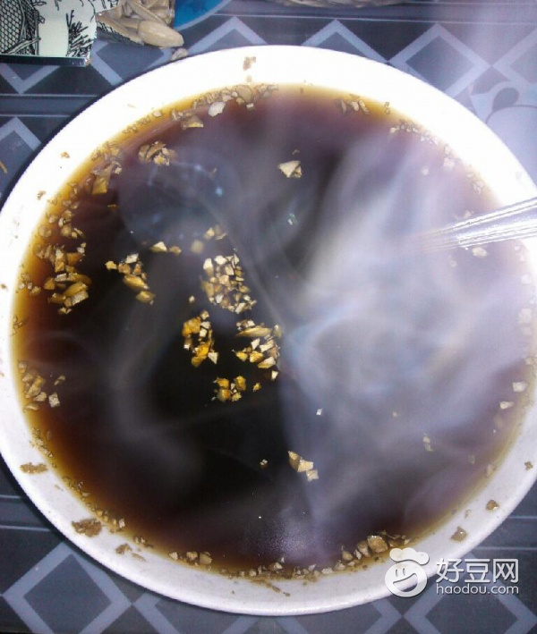

【日常保健】晨起一杯姜糖水
2014-05-08 13:47:18
夏天炎热，家住在福建漳洲市的杨丽丽女士晚上很晚才入睡，第二天又睡不醒。这几天，酷暑使得杨女士精神紧张，极度烦躁，还出现了胃胀、胃痛。

文：吴志、林宝珍 编辑：王俊聪
来源：《大众健康》
对杨丽丽的这种情况，南京军区福州总医院中医科主任刘建华主任医师认为，夏天阳气旺盛，脾胃养生应该以“养心”为主，同时注意养阳，平时可以多吃蔬菜瓜果“降火”，还可以吃姜养脾阳除湿。
多吃蔬菜瓜果“降火”
为何夏季肠胃疾病高发呢？中医认为暑湿困脾，导致人的脾胃功能相对于其他季节更弱。“脾胃伤则百病由生”，所以体质较差的人或有其他慢性病的病人尤其需要注意保护脾胃。而从外界环境上看，炎夏里食物容易腐败变质产生毒素，细菌等容易繁殖生长，所以夏季腹泻等肠胃疾病常见。
生活中，无论起居还是饮食都要避免寒凉，猛吹空调、冰冻啤酒都是要不得的。炎炎夏日里的饮食应以清淡质软、易于消化为主，少吃煎炸油腻、辛辣食品。
清淡的饮食能清热、防暑、敛汗、补液，还能增进食欲。多吃新鲜的蔬菜瓜果，如冬瓜、苦瓜、西瓜、黄瓜等，既可满足人体所需营养，又可预防中暑。吃冷饮要适度，不可过多吃寒凉之品，否则会伤阳而损身。另外，可以适当吃些醋，醋既能生津开胃，又能杀灭病菌，预防胃肠道病。
凉茶多为苦寒之物，胃寒的人饮用要慎重。可以尝试一下炒谷芽、麦芽泡水喝，炒麦芽、炒谷芽的功效有消食、和中、下气等，可治疗积食不消、食欲不振。
晨起喝姜糖水“醒胃”
俗话说“冬吃萝卜夏吃姜”。夏天吃姜有什么好处呢？夏天不仅热且湿，而生姜性温可发汗散寒，吃姜可以起到养脾阳而除湿的作用。
夏天，人们好贪凉，喜爱电扇空调对着用，很容易感受风寒，引起伤风感冒，及时喝点姜糖水，有助于驱逐体内风寒。姜还可温胃止吐。夏季细菌生长繁殖异常活跃，容易污染食物而引起急性肠胃炎，此时适当以生姜或用干姜加茶沸水冲泡后饮之，能起到防治作用。
姜的吃法很多，例如早上起来不要喝冰凉的水或饮料，可以喝一杯生姜红糖水，对脾胃来说是非常健康的。如果上班族早上起来没时间煮生姜红糖水，可以在晚上先煮好，第二天早上加热喝也可以。还可以吃姜粥，或煮菜热油时放点姜丝，炖肉、煎鱼加姜片，制扁食、水饺馅时加点姜碎，既能使味道鲜美，又有助于醒胃开脾。
有些人吃姜喜欢削皮，这样做不能发挥姜的整体功效。一般的鲜姜洗干净后就可以切丝分片。但是从治病的角度看，生姜红糖水只适用于风寒感冒或淋雨后有胃寒、发热的患者，不能用于暑热感冒或风热感冒患者，更不能用于治疗中暑。服用鲜姜汁可治因受寒引起的呕吐，对其他类型的呕吐则不宜使用。